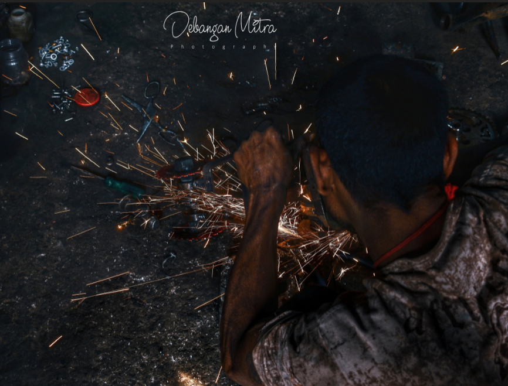
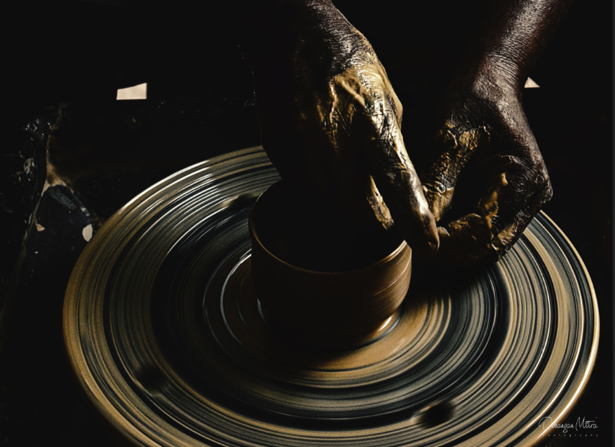
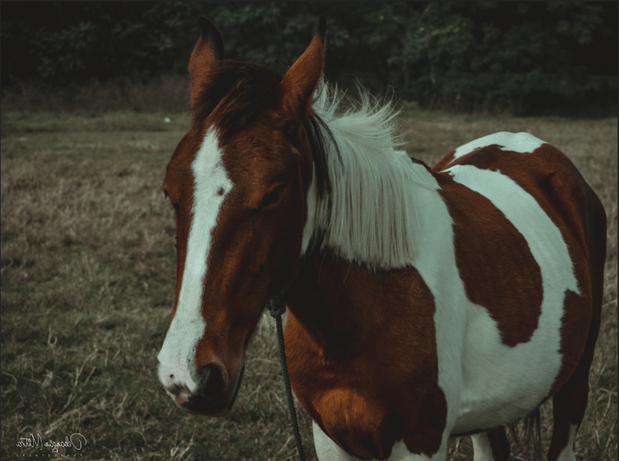
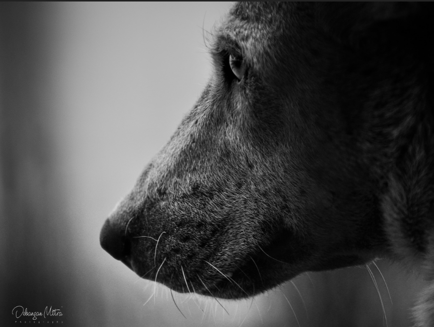
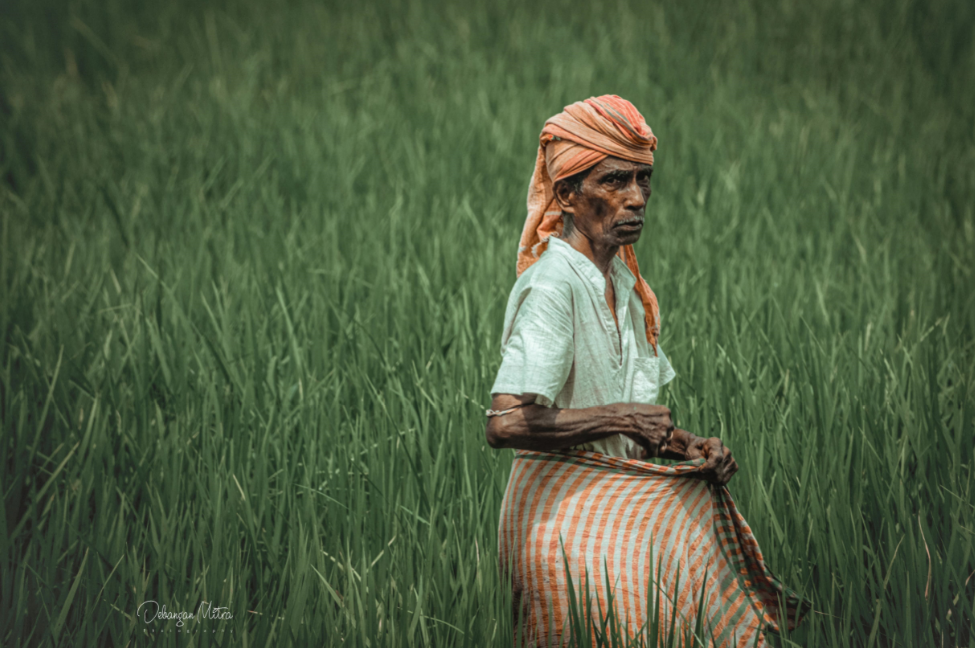
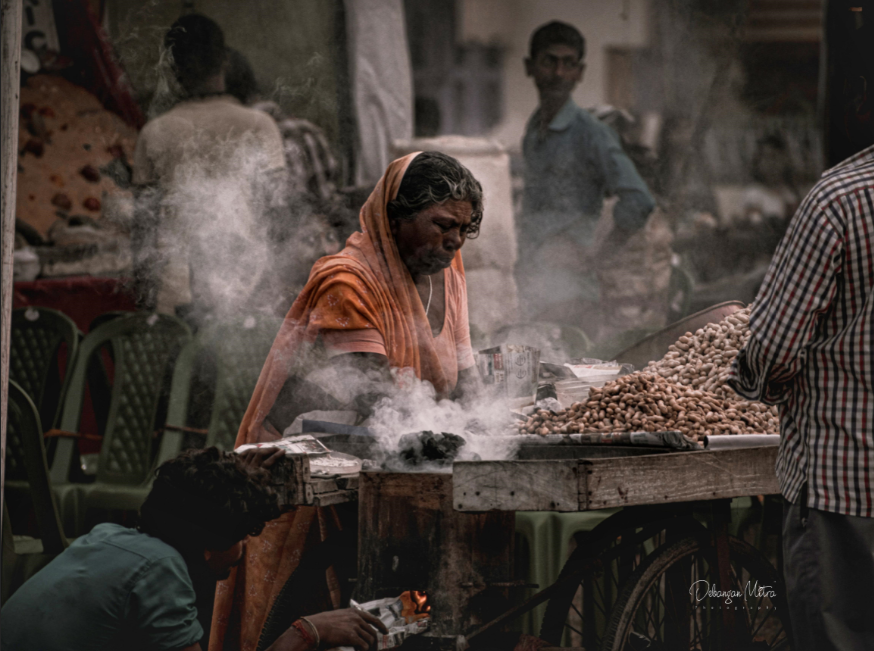
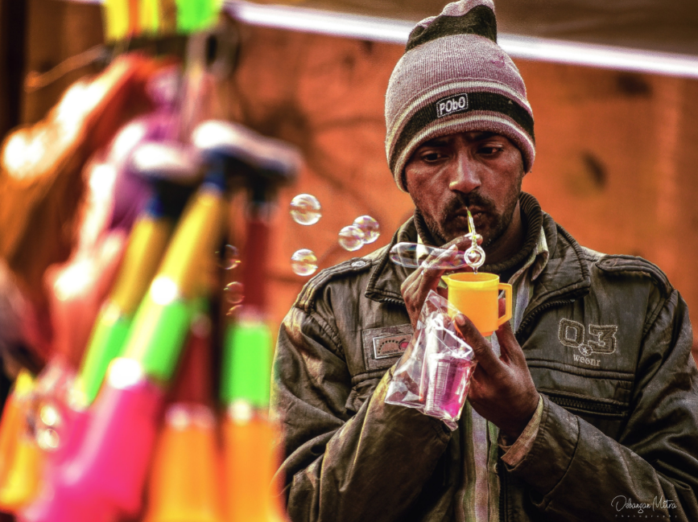

|| When the sparks of hardwork start making their noise, it is important to hold the ignitor strong. ||

|| Clay can be dirt in the wrong hands, but clay can be art in the right hands. ||

|| Photography is a reality so subtle that it becomes more real than reality. ||

|| “Dogs are wise. They crawl away into a quiet corner and lick their wounds and do not rejoin the world until they are whole once more.” ||

|| Curious Eyes. ||

|| Our deep respect for the land and its harvest is the legacy of generations of farmers who put food on our tables, preserved our landscape, and inspired us with a powerful work ethic. ||

|| Photography is a reality so subtle that it becomes more real than reality. ||
